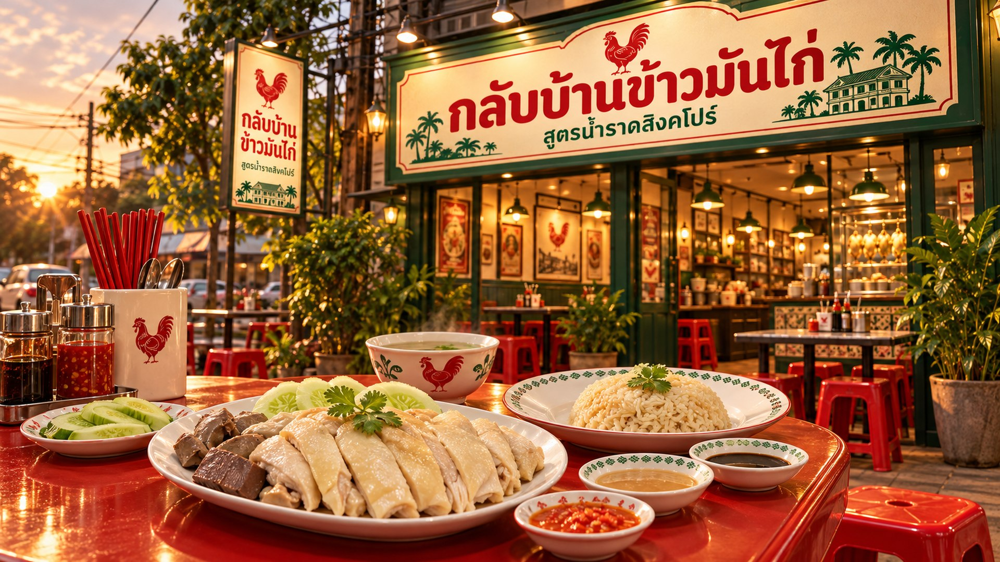
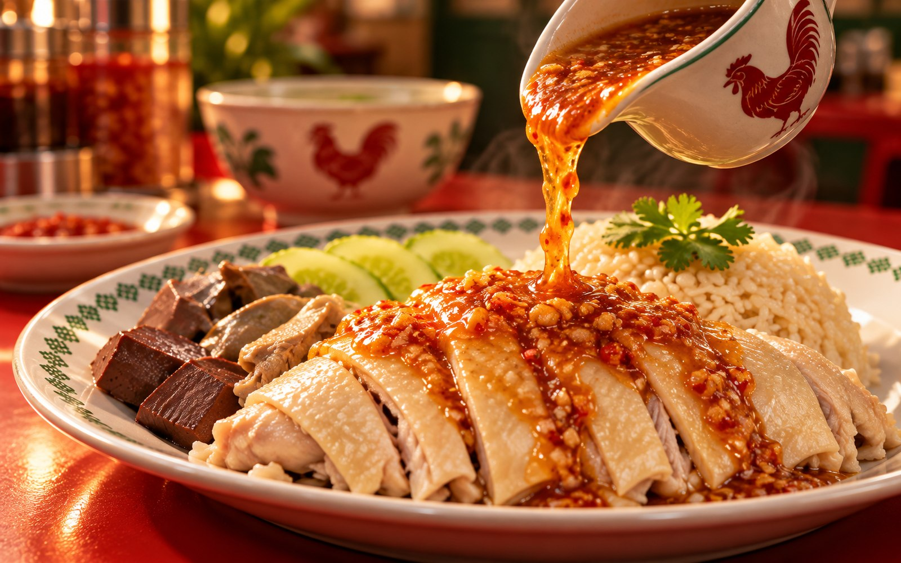
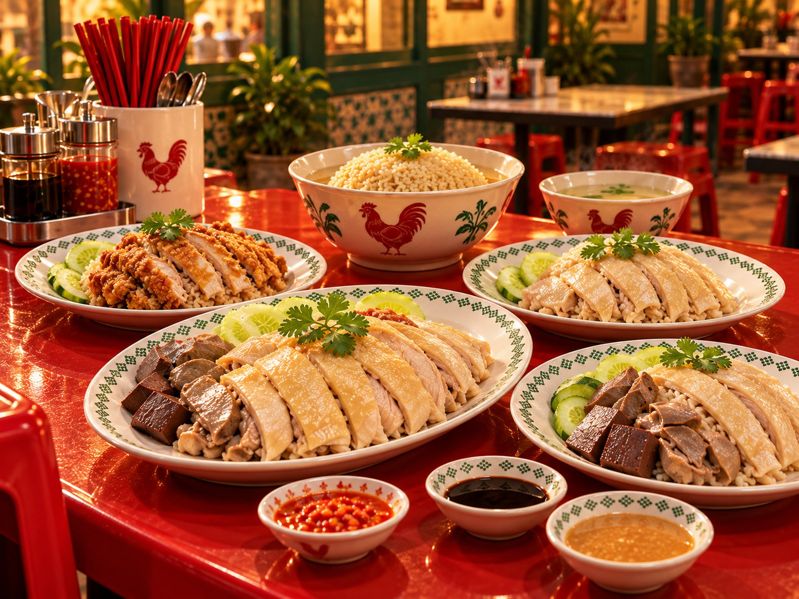
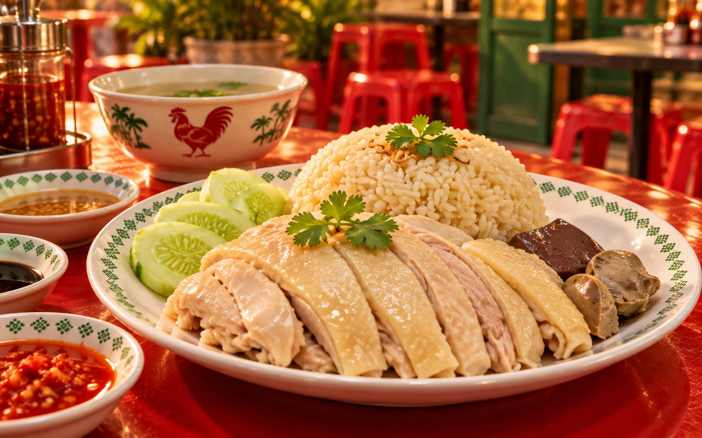
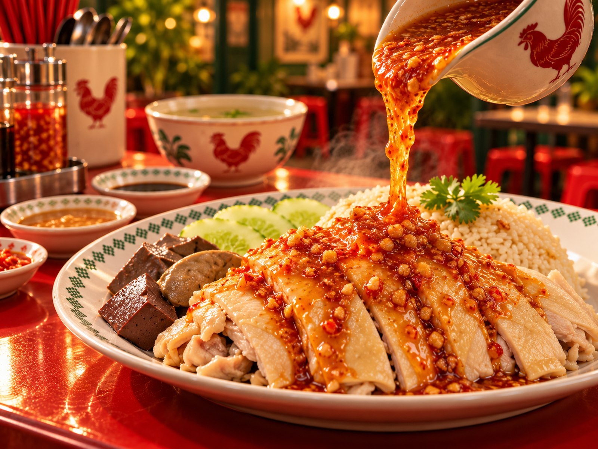
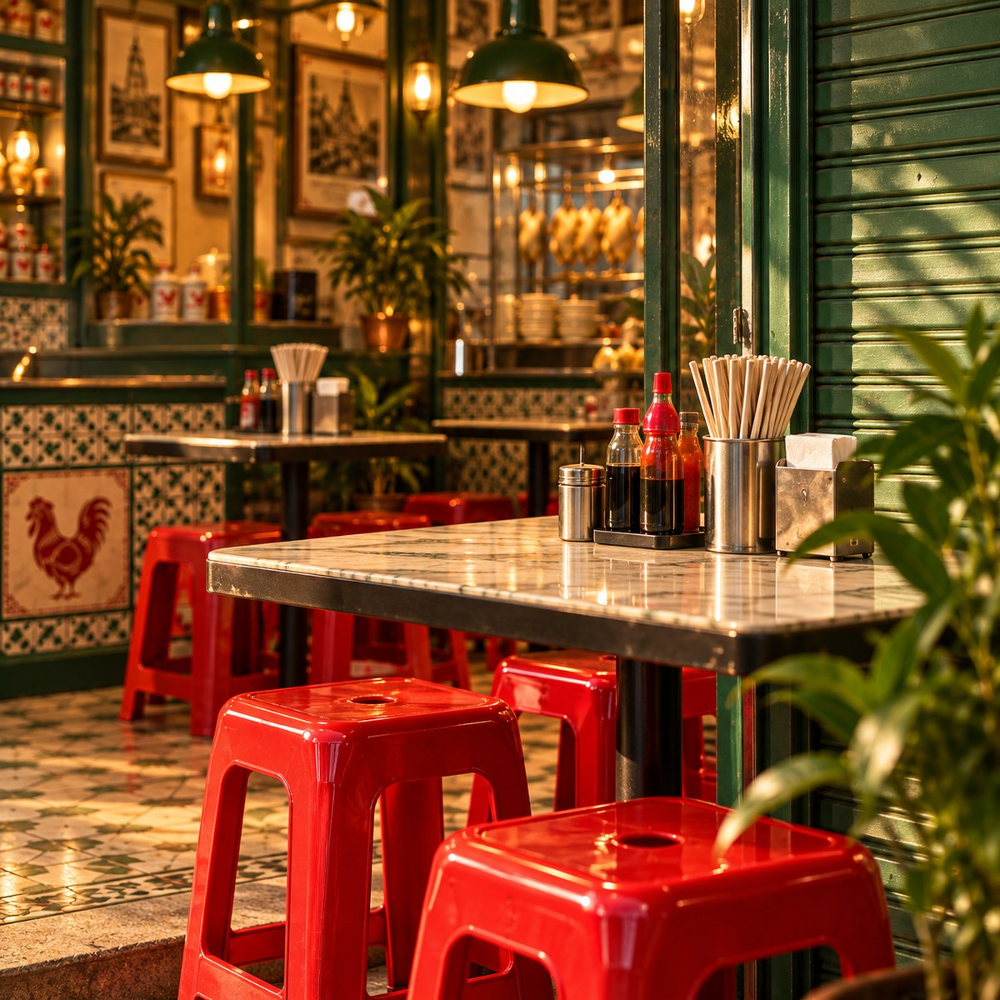
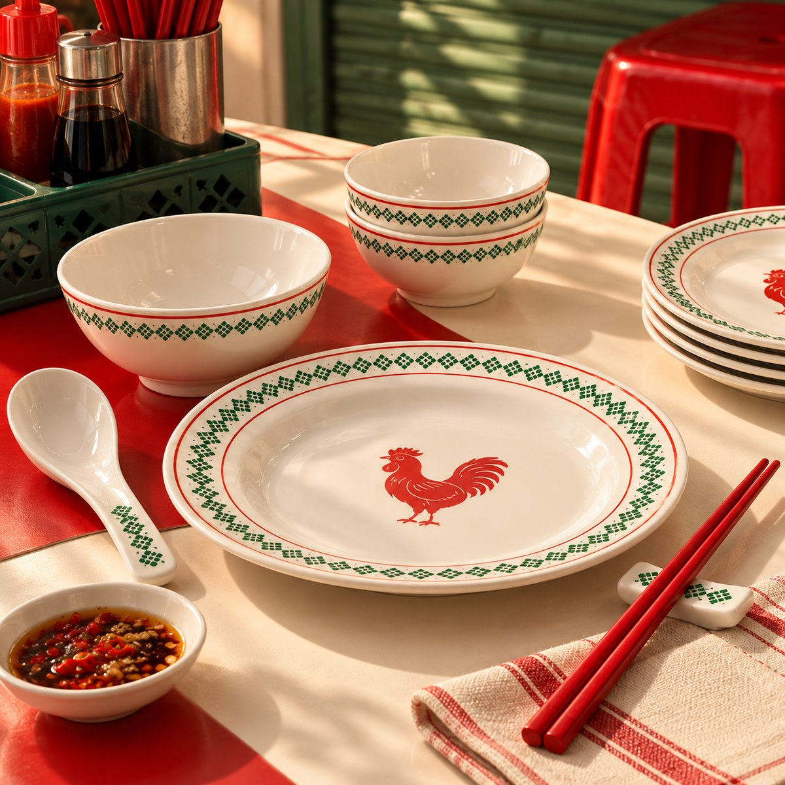

มีงานทำ
แต่ไม่พบตัวตน
ทำงานอยู่ในระบบ ตื่น ทำงาน กลับบ้าน แล้วเริ่มใหม่อีกครั้ง จนวันหนึ่งคำถามธรรมดากลายเป็นเรื่องใหญ่ — เรากำลังใช้ชีวิตของใครอยู่กันแน่

ข้าวมันหอม ไก่นุ่ม น้ำราดมีรสจำ — ร้านเล็ก ๆ ที่ตั้งใจทำมื้อธรรมดาให้น่ากลับมากินซ้ำ
เลือกแบบเร็วสำหรับมื้อที่ไม่อยากคิดเยอะ ระบบจะใส่เมนูลงตะกร้าให้ทันที

เราไม่ได้อยากให้ข้าวมันไก่เป็นแค่มื้อที่กินแล้วจบ น้ำราดจึงถูกทำให้มีรสจำ หอม เข้ม และพอจะพาไก่ ข้าว และเครื่องเคียงไปด้วยกัน
ทำงานอยู่ในระบบ ตื่น ทำงาน กลับบ้าน แล้วเริ่มใหม่อีกครั้ง จนวันหนึ่งคำถามธรรมดากลายเป็นเรื่องใหญ่ — เรากำลังใช้ชีวิตของใครอยู่กันแน่
 02 · CHOICE
02 · CHOICEคิดได้หลายอย่าง อยากทำได้หลายอย่าง แต่ชีวิตจริงเลือกทุกทางพร้อมกันไม่ได้ สุดท้ายจึงต้องจิ้มสักอย่าง แล้วลงมือให้จริง

03 · BASICอาหารคือเรื่องพื้นฐานที่สุดของคน มื้อหนึ่งอาจไม่ได้เปลี่ยนโลก แต่ทำให้คนมีแรงกลับไปใช้ชีวิตต่อได้

04 · THE PICKเรียบง่าย เข้าใจง่าย กินได้ทุกวัย และมีรายละเอียดมากพอให้ทำอย่างจริงจัง เราเลยเริ่มจากสิ่งนี้

05 · EVERYDAYเราไม่ได้อยากเป็นอาหารพิเศษที่นึกถึงปีละครั้ง แต่อยากเป็นร้านที่วันธรรมดาก็แวะมาได้ — ดีพอให้อยากกลับมากินอาทิตย์ละสองมื้อ

06 · GO FARถ้าคนหนึ่งกินแล้วชอบ เขาจะกลับมา ถ้าชอบมากพอ เขาจะพาคนอื่นมา นั่นคือวิธีที่เราอยากให้ “กลับบ้าน” เติบโต
กินดี เหมือนกลับบ้านภาพจำของร้านตั้งใจให้เข้าถึงง่ายแบบร้านริมทาง แต่มีภาษาของแบรนด์ชัด — เขียว แดง ครีม ภาชนะขาว และแสงอุ่น


เลือกเมนู ใส่ตะกร้า แล้วคัดลอกออเดอร์หรือส่งต่อเข้า LINE ได้จากหน้าเดียว